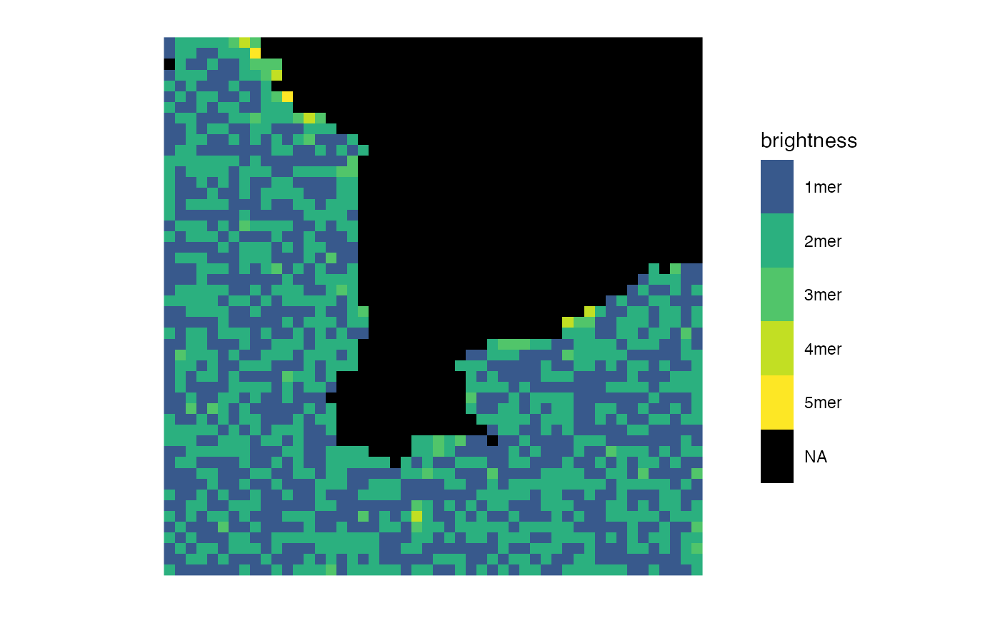
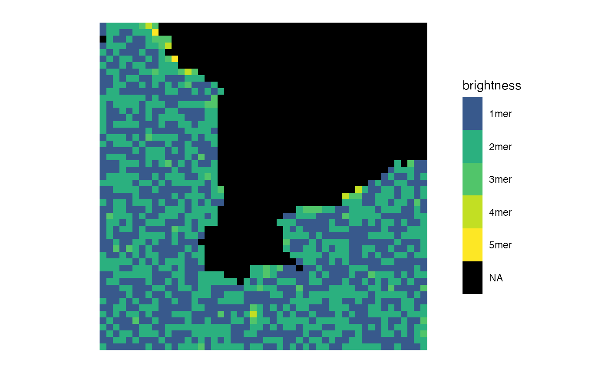
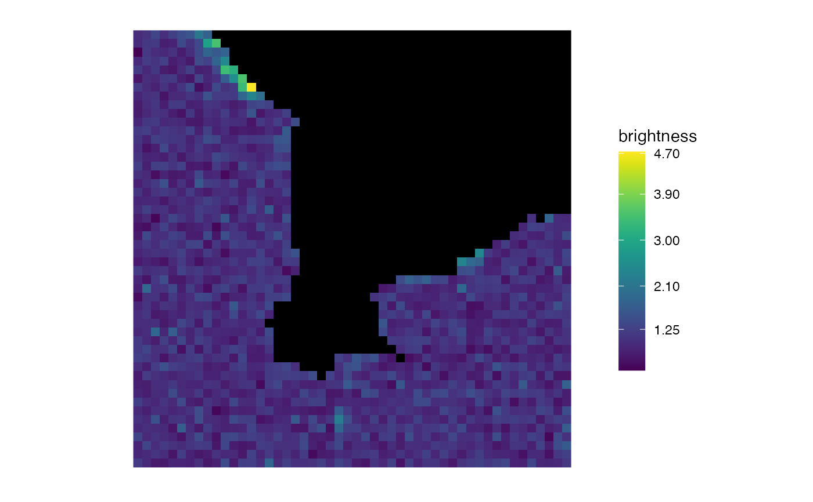
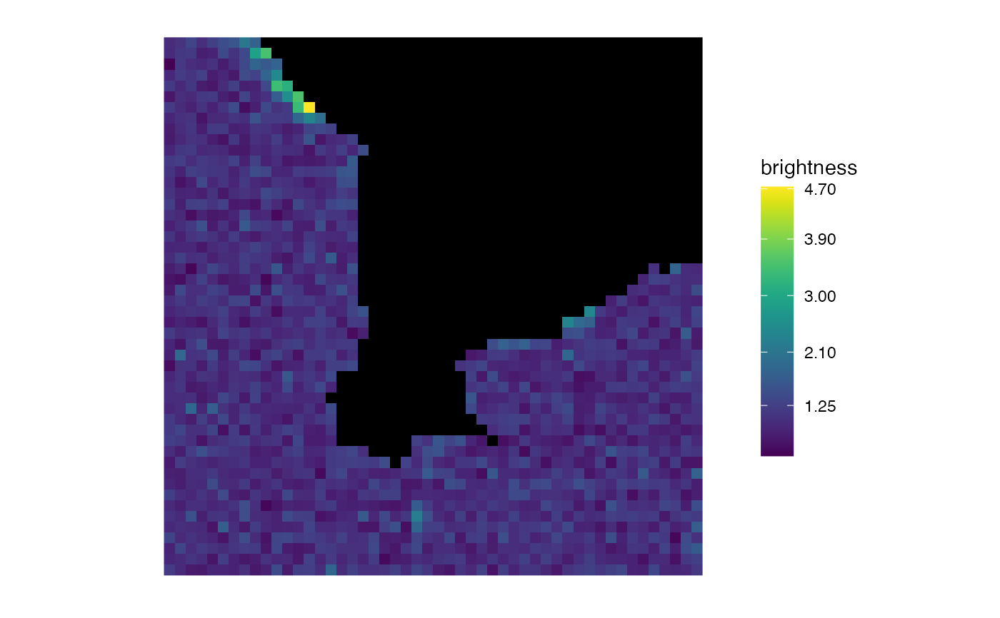

Given a matrix mat, make a raster plot of the matrix whereby in the
plot, the pixel at \(x = \)i, \(y = \)j has colour based on
the value of mat[i, j] and the \(x\) axis points right and the
\(y\) axis points down (see 'Details').
Usage
matrix_raster_plot(
mat,
scale_name = "scale",
limits = NULL,
ranges = NULL,
range_names = NULL,
colours = NULL,
na_colour = "black",
clip = FALSE,
clip_low = FALSE,
clip_high = FALSE,
log_trans = FALSE,
breaks = NULL,
include_breaks = NULL
)Arguments
- mat
The matrix you wish to plot.
- scale_name
A string. The title of the color scale on the right of the plot.
- limits
This gives the user the option to set all values outside a certain range to their nearest value within that range (if
clip = TRUE) or toNA(ifclip = FALSE. For example, to set all values outside the range [1.5, 2.6) toNA, uselimits = c(1.5, 2.6), clip = FALSE. The colour range will cover all values within these specified limits.- ranges
A numeric vector. If you want specific ranges of values to have the same color, specify these ranges via an increasing numeric vector. For example, if you want the ranges 0.5-1.2 and 1.2-3, use
ranges = c(0.5, 1.2, 3). Ifrangesis specified as a number (a numeric vector of length 1)n, this is equivalent to setting ranges to benequal-length intervals within the range of the matrix, i.e. it is equivalent to setting `ranges = seq(min(mat), max(mat), length.out = n1)
. At most one ofrangesandlimitsshould be set. If ranges is set, the behaviour for values which are not in any of the ranges are set by thecliparguments as in thelimits` argument.
- range_names
A character vector. If your colour scale is discrete, here you can set the names which will label each range in the legend.
- colours
If you have set
ranges, here you may specify which colors you wish to colour each range. It must have the same length as the number of intervals you have specified inranges. If you have not specifiedranges, here you may specify the colours (to be passed toggplot2::scale_fill_gradientn()) to create the continuous colour band. It is specified as a character vector, with the colors specified either as the values incolors()or as in the value of thergb()function. Note that this allows the use ofgrDevices::rainbow()and friends. The default usesviridis::viridis().- na_colour
Which colour should the
NApixels be? Default is black.- clip
If either
limitsorrangesare set (one should never set both), there may be values that fall outside the specified limits/ranges. Ifclip = TRUE, values outside these limits/ranges are set to their nearest values within them, but ifclip = FALSE, these values are set to NA. Note that settingclip = TRUEis equivalent to setting bothclip_lowandclip_hightoTRUE.- clip_low
Setting this to
TRUE(and leavingclip = FALSE,clip_high = FALSE) will set all values falling below the specified limits/ranges to their nearest value within them, but all values falling above those limits/ranges will be set toNA.- clip_high
Setting this to
TRUE(and leavingclip = FALSE,clip_low = FALSE) will set all values falling above the specified limits/ranges to their nearest value within them, but all values falling below those limits/ranges will be set toNA.- log_trans
Do you want to log-transform the colour scaling?
- breaks
Where do you want tick marks to appear on the legend colour scale?
- include_breaks
If you don't want to specify all the breaks, but you want some specific ones to be included on the legend colour scale, specify those specific ones here.
Value
In the graphics console, a raster plot (via
ggplot2::geom_raster()) will appear with the matrix values
represented as pixel colours, with a named scale bar.
Examples
# \donttest{
img <- ijtiff::read_tif(system.file("extdata", "50.tif", package = "nandb"))
#> Reading 50.tif: an 8-bit, 50x50 pixel image of unsigned
#> integer type. Reading 1 channel and 50 frames . . .
#> Done.
ijtiff::display(img[, , 1, 1])
#> Using basic display functionality.
#> * For better display functionality, install the EBImage package.
#> * To install `EBImage`:
#> - Install `BiocManager` with `install.packages("BiocManager")`.
#> - Then run `BiocManager::install("EBImage")`.
 matrix_raster_plot(img[, , 1, 1])
matrix_raster_plot(img[, , 1, 1])
 b <- brightness(img, def = "B", detrend = FALSE, thresh = "Huang")
matrix_raster_plot(b, scale_name = "brightness")
b <- brightness(img, def = "B", detrend = FALSE, thresh = "Huang")
matrix_raster_plot(b, scale_name = "brightness")
 matrix_raster_plot(b, scale_name = "brightness", log_trans = TRUE)
matrix_raster_plot(b,
scale_name = "brightness", log_trans = TRUE,
include_breaks = 1.35
)
matrix_raster_plot(b, scale_name = "brightness", log_trans = TRUE)
matrix_raster_plot(b,
scale_name = "brightness", log_trans = TRUE,
include_breaks = 1.35
)
 matrix_raster_plot(b,
scale_name = "brightness", log_trans = TRUE,
breaks = 1:3
)
matrix_raster_plot(b,
scale_name = "brightness", log_trans = TRUE,
breaks = 1:3
)
 matrix_raster_plot(b,
scale_name = "brightness",
ranges = seq(0.5, 3, length.out = 6),
range_names = paste0(1:5, "mer")
)
matrix_raster_plot(b,
scale_name = "brightness",
ranges = seq(0.5, 3, length.out = 6),
range_names = paste0(1:5, "mer"), log_trans = TRUE
)

matrix_raster_plot(b,
scale_name = "brightness",
include_breaks = 1.25, range_names = NULL,
log_trans = FALSE
)
matrix_raster_plot(b,
scale_name = "brightness",
ranges = seq(0.5, 3, length.out = 6),
range_names = paste0(1:5, "mer")
)
matrix_raster_plot(b,
scale_name = "brightness",
ranges = seq(0.5, 3, length.out = 6),
range_names = paste0(1:5, "mer"), log_trans = TRUE
)

matrix_raster_plot(b,
scale_name = "brightness",
include_breaks = 1.25, range_names = NULL,
log_trans = FALSE
)
 matrix_raster_plot(b,
scale_name = "brightness",
include_breaks = 1.25, log_trans = TRUE
)
matrix_raster_plot(b,
scale_name = "brightness",
include_breaks = 1.25, log_trans = TRUE
)
 matrix_raster_plot(b,
scale_name = "brightness",
limits = c(1, 1.25), clip = TRUE
)
matrix_raster_plot(b,
scale_name = "brightness",
include_breaks = 1.25
)

# }
matrix_raster_plot(b,
scale_name = "brightness",
limits = c(1, 1.25), clip = TRUE
)
matrix_raster_plot(b,
scale_name = "brightness",
include_breaks = 1.25
)

# }